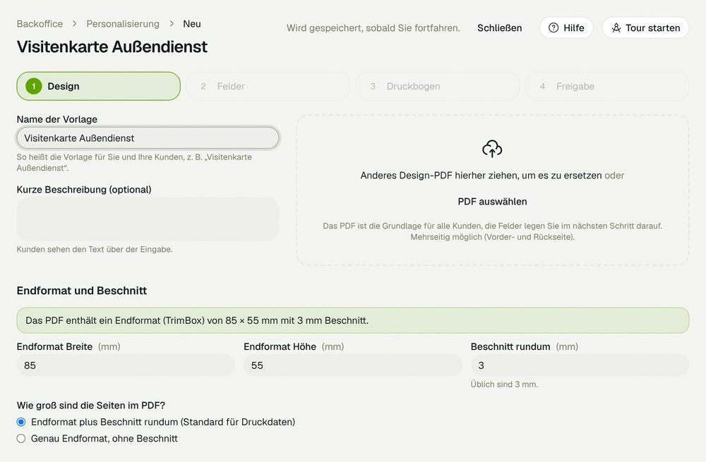
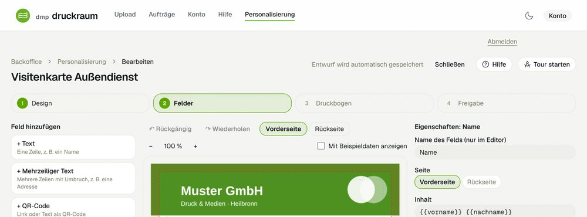
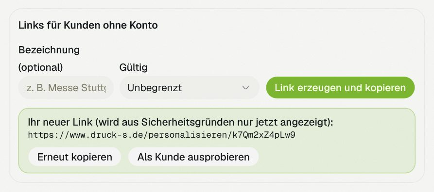

Name der Vorlage eintragen, z. B. „Visitenkarte Außendienst“.
Das fertige Design als PDF in das Feld ziehen oder PDF auswählen. Mit Vorder- und Rückseite ist möglich.
Das erkannte Endformat und Beschnitt prüfen (üblich: 3 mm).
Vorlage anlegen und weiter klicken.

Nichts kann kaputtgehen: Alles wird automatisch als Entwurf gespeichert. Kunden sehen die Vorlage erst nach Veröffentlichen.
2
Felder platzieren
Links unter Feld hinzufügen die Art wählen: Text, Mehrzeiliger Text, QR-Code, vCard-QR oder Barcode.
Das Feld auf dem Design verschieben; es rastet ein (Alt gedrückt = nicht einrasten). An den Griffen die Größe ändern.
Pfeiltasten verschieben um 0,1 mm, mit Umschalt um 1 mm.
Rechts bei Eigenschaften: Schrift, Größe, Farbe, Ausrichtung.
Im Feld Inhalt bei Eingabe einfügen einen Platzhalter wählen, z. B. + Nachname.
Mit Beispieldaten anzeigen zeigt die Karte mit echtem Namen.

Fehler gemacht?Rückgängig oder Strg+Z (Mac: Cmd+Z) holt sogar ein gelöschtes Feld zurück.
dmp
Personalisierung: Vorlage anlegen
3
Druckbogen wählen
Unsicher? Lassen Sie Einzelseiten mit Beschnitt (Standard) stehen. Ausgeschossen auf Druckbögen ordnet die Karten selbst auf dem Bogen an; dann Bogenformat, Ränder und Abstände wählen. Optional ein Stanz-PDF hinzufügen.
4
Freigeben und an Kunden schicken
Bei Wer darf die Vorlage nutzen? wählen: Nur Mitarbeiter, Bestimmte Kunden oder Öffentlich per Link.
Bestimmte Kunden: anhaken. Sie finden die Vorlage unter „Meine Vorlagen“.
Öffentlich per Link:Link erzeugen und kopieren – der Link wird nur jetzt angezeigt. Per E-Mail an den Kunden schicken.
Unter Noch zu erledigen stehen offene Punkte. Dann Veröffentlichen.

5
Für Kunden ausfüllen und Auftrag bearbeiten
In der Übersicht Für Kunden ausfüllen → Kunden wählen → Daten eintragen → Im Namen des Kunden absenden. Kein Code nötig.
Aufträge aus Vorlagen tragen das Kennzeichen Personalisierung. Druck-PDF und Datentabelle (XLSX) liegen unter Dateien. Stichproben prüfen, dann wie gewohnt weiter.
Häufige Fehler
Text passt nicht: Feld größer ziehen oder Automatisch verkleinern, bis es passt einschalten.
Feld im Beschnitt: hinter die blau gepunktete Linie schieben (3 mm Sicherheitsabstand).
Schrift fehlt: unter Schriften & Farben hochladen.
Virenscan läuft noch: weiterarbeiten, einige Minuten später veröffentlichen.
Link ungültig: neuen Link erzeugen.
Gut zu wissen
Rote Meldungen sind Fehler und sperren das Absenden, gelbe sind Hinweise.
An aktiven Vorlagen nicht üben: Duplizieren und in der Kopie probieren.
Altvorlagen aus dem früheren System liegen als Entwurf bereit. Prüfen, dann veröffentlichen.
Fragen? Hilfe-Menü Hilfe oben rechts oder Tour starten.